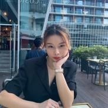

Find out more about me!

Hey! My name is Clarisse, I am a bachelor student at ESSEC Business School and I am currently doing my first year. I would like to share with you my interests and tips on this page so that you can follow me throughout my journey!
My name is Clarisse Qian, I am 18 years old and I am a student. I am now based in Singapore. I would say that I am an extrovert, people say that I am very friendly and bubbly. Find out more about me below!
I grew up in France where I did my elementary, middle and high school. I went to Collège Jacqueline Auriol (middle school) and Lycée Henri Matisse (high school). I got my Baccalauréat which is a high school degree in France which highest honors. Then I went to Singapore to be a student at ESSEC Business School as a GBBA student. Lastly, I would like to persue a Master after graduating.
I was born and raised in France but I am actually Chinese. More pricisely Chinese-Korean. Even though I mainly stayed in France my whole life, I got the opportunity to discover many new cultures thanks to my background. I went to China every summer which allows me to have a deep aknowledge of this country. I have also been in London for 1 year during my middle school days and I have travel to more than 50+ countries around the world at such a young age! Now, I am based in Singapore for my studies. Thanks to this amazing experience, I can speak 5 languages! (English, French, Spanish, Chinese, Korean)
First of all, I really like to cook and bake. I think that it is a very relaxing thing to do. Then, I like to dance. In fact, I was a dance trainee before. Crazy right? Lastly, I like to spend time alone or with my loved ones. Very unexpected but I don't really like to party.. I prefer to spend time at home!